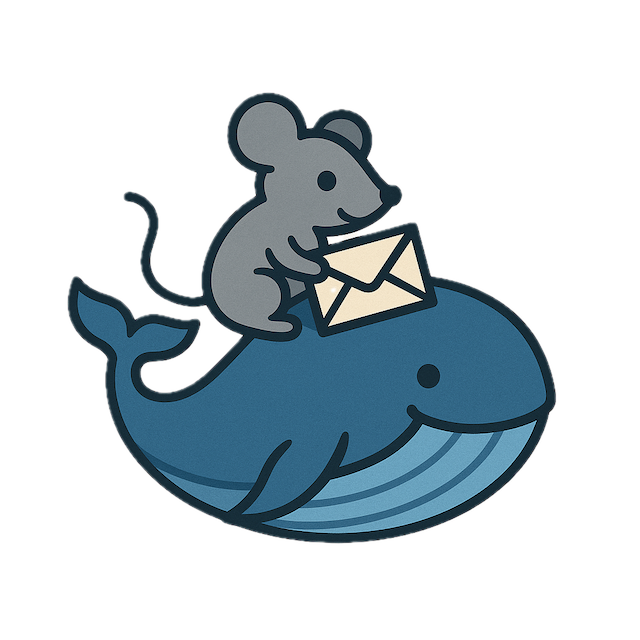

docker-mailserver Documentation

docker-mailserver is a containerized email server solution inspired by the ISPMail guide. It provides a secure, customizable email infrastructure that runs on Docker or Kubernetes.
Overview
This project enables you to operate your own email services, providing independence from large email providers. The solution is built on Alpine Linux and vendor base images, keeping container images lightweight while maintaining comprehensive functionality.
Documentation structure
The documentation is organised by purpose:
- Tutorial: Getting Started — A step-by-step lesson to install docker-mailserver with Docker Compose and create your first mailbox.
- How-to guides — Task-oriented guides for specific goals: install with Docker, install on Kubernetes, configure DNS, configure TLS, manage users, and more.
- Reference — Technical descriptions: environment variables, DNS records, ports, service architecture, user roles, and related topics.
- Explanation — Background and context: architecture, DNS and email delivery, observability.
Key features
- Email protocols: POP3, IMAP, and SMTP with user authentication
- Web management: Web-based interface for account, domain, and alias administration
- Webmail: Integrated webmail interface
- External mail retrieval: Fetchmail integration for retrieving emails from external providers
- Email authentication: DKIM message signing for email authenticity
- Spam filtering: Server-side mail filtering with configurable rules via web frontend
- Spam training: Train spam filters by moving emails to or from the junk folder
- Real-time protection: RBL integration for spam prevention
- Greylisting: Selective greylisting for likely spam
- Address management: Catch-all addresses, send-only accounts, local address extension (RFC 5233)
- Security: Sender address restrictions and configurable address extensions
- Quota management: Email quota management with notifications
- TLS: Enforced TLS for secure communication
- Full-text search: FTS support for efficient message searching
- Health monitoring: Continuous self-monitoring via Docker healthcheck
Quick start
- Tutorial: Getting Started — Install with Docker Compose and create your first account
- How to install with Docker — Docker Compose installation steps
- How to install on Kubernetes — Kubernetes deployment steps
- How to upgrade — Upgrade procedures and upgrade changelog
Service architecture
The mailserver consists of multiple microservices:
- MTA (Mail Transfer Agent) — Postfix for SMTP
- MDA (Mail Delivery Agent) — Dovecot for IMAP/POP3
- Web — Admin interface and Roundcube webmail
- Filter — RSpamd for spam filtering
- SSL — Certificate generation and management
- Database — MySQL for user and configuration data
- Redis — Caching and session storage
- Unbound — DNS resolver for the filter service
- Fetchmail — External mail retrieval (optional)
See Service architecture reference for a concise list and About the service architecture for context.
Getting help
- GitHub Issues — Report bugs and request features
- Releases — View release notes and changelog
Container images
Container images are available at:
Component references
- Dovecot Documentation
- Postfix Documentation
- Rspamd Documentation
- Roundcube Documentation
- Redis Documentation
- Unbound Documentation